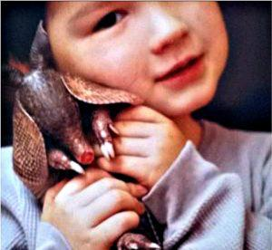

Muchas personas tiene un fuerte lazo con los animales, una de ellas es Susana Carpio, quien desde niña aprendió de su padre el respeto y amor hacia sus primeras mascotas. Desde muy joven socorrió a perros heridos, enfermos o cachorros sin rumbo. (1995) aaudarlos de forma más eficiente.
En junio de 1995 conforma un nuevo grupo llamado “Animales SOS”, Camilo Bocángel and Ericka De la Galvez. Una manifestación de repudios por actos crueles cometido por comerciantes de mascotas en un lugar llamado Chapi K’atu, convoca a los primeros voluntarios.
Animales S.O.S se establece legalmente en Bolivia mediante una Resolución Prefectural Nº 831 de fecha 6 de diciembre de 1996, la cual resuelve: “Reconocer Personería Jurídica de la Asociación de Animales S.O.S.”
Animales S.O.S conforma su directiva nacional anualmente, todos estos cargos son ocupados por personas sobresalientes y constantes en su trabajo por los animales, ellos son elegidos en Asamblea General y no reciben ningún tipo de remuneración económica.
Animales S.O.S Bolivia cuenta con un pequeño plantel asalariado de varios voluntarios, quienes distribuyen su tiempo libre para colaborar en las actividades cotidianas de socorro y ayuda destinada a los animales.
El viernes 11 de marzo de 2011, el Rotary Club en una sesión especial por el Día Internacional de la Mujer, distinguió con la Medalla Rotaria a mujeres sobresalientes en diferentes campos, científico, cultural, militar, periodístico, etc., fue un orgullo estar al lado de Elsa Dorado de Revilla, Ninón Dávalos de Kushner, María Renee Duchén, Elvia Moya, Cnl. DAEN Toshico Pinto, la policía Nancy Herrera y otras profesionales destacadas.
En Enero de 2007 Susana Carpio Ormachea fue considerada como “Mujer con Valor” por la Red ATB Canal 9.
En Agosto del 2005 Susana Carpio Ormachea fue considerada como” Boliviana Destacada” por la Red ATB Canal 9, una de las redes de televisión nacional más importantes de nuestro país.
Animales S.O.S recibió en abril del 2004 de parte del Centro Boliviano de Filantropía, conmemorando el Día Mundial del Servicio Voluntario, el otro en mayo de 2005, por la Cruz Roja Boliviana Filial La Paz.